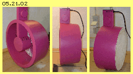
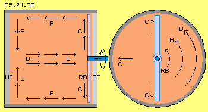
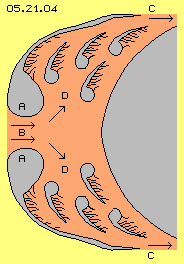
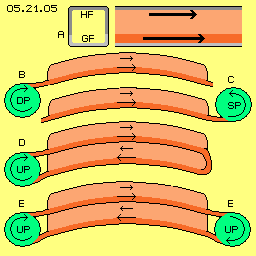
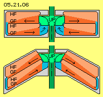
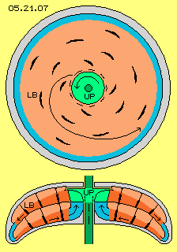
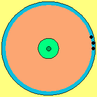

Wertloses Funktionsmodell
Ich habe dazu einen Ventilator entsprechend umgebaut (siehe Bild 05.21.02). In einem konischen Zylinder sind die Rotorblätter montiert. Diese wurden so verformt, dass die Luft nicht mehr in axiale Richtung gefördert, sondern nurmehr in Drehung versetzt wird. Eine Seite blieb offen (links), die andere geschlossen (weiß, rechts).
Es ergab sich ein seltsamer Effekt: mit der Hand vor der offenen Seite konnte die Einrichtung (ohne Berührung) - nach links gezogen werden - was aber nicht Zielsetzung war. Wenn auch diese Seite geschlossen wurde, ergab sich kein Ausschlag.
Das gleiche Ergebnis wurde von zwei Kollegen mit entsprechendem Aufbau erreicht. Damit hat sich dieses Funktionsmodell als vollkommen wirkungslos erwiesen. Damit ist aber keinesfalls auch die gesamte Konzeption des Glockenmotors wertlos. Bei diesem Modell wurde lediglich ein bekanntes Bernoulli-Gesetz vernachlässigt.
Beugung von Stromlinien und fortgesetzter Sog 
Diese Situation ist hier gegeben (siehe Bild 05.21.03 im Querschnitt rechts), wenn die Rotorblätter (RB) einen starren Wirbel erzeugen: innen existiert eine Strömung A, außen eine schnellere Strömung B, so dass automatisch eine zusätzliche Bewegung C der Luftpartikel von innen nach außen entsteht.
Dadurch ergibt sich reduzierte Dichte im zentralen Bereich nahe zur Gleitfläche GF. Diese wird aufgefüllt durch eine Strömung D entlang der Mittelachse (siehe Längsschnitt links). Bei geschlossenem System wirkt dieser Sog entlang der Haftfläche HF, so dass eine radial einwärts gerichtete Strömung E zustande kommt. Die hohe Dichte außen nahe der Gleitfläche wird entspannt durch eine Strömung F entlang der Außenwand.
Die Strömungen D und F sind gegen-läufig, so dass sie einerseits zur Wand hin gedrückt und andererseits im Zentrum konzentriert werden. Die gesamte Luft zirkuliert entlang der Innen-Flächen (insgesamt immer auf spiraligen Bahnen). Es kommt damit keine Differenz der Strömungs-Geschwindigkeiten an den Gleit- und Haftflächen zustande und damit auch keine Differenz statischer Drücke. Diese Form der Luftbewegung ist praktisch eine ´Kurzschluss-Zentrifugalpumpe´ und damit total ungeeignet für die Zielsetzung der Glocken-Motor-Konzeption.

Forellen-Motor
Vor einem Jahrzehnt habe ich diese Problematik im Kapitel ´05.09. Forellen-Vortrieb´ analysiert und konstruktive Lösungen daraus abgeleitet. Leider ist mir bis heute nicht bekannt, ob diese Vorschläge aufgegriffen wurden. In Bild 05.21.04 ist schematisch der Kopf einer Forelle skizziert.

Dieses Bewegungsprinzip müsste auch technisch umsetzbar sein: durch den Staudruck am Bug eines Fahrzeugs wird Wasser bzw. Luft durch eine Öffnung in Kanäle gedrückt und beidseits außen durch die umgebende Strömung wieder abgesaugt. Die Kanäle müssen so strukturiert sein, dass die Wirkung dieser Kiemen nachgebildet wird. Details hierzu sind in obigem Kapitel ausführlich beschrieben. Eine Anwendung dieses ´Forellen-Prinzips´ ist z.B. in Kapitel ´05.08. Flugzeug NT´ dargestellt.
Die vorliegende Konzeption des Glocken-Motors ist eine konsequente Fortsetzung dieser Überlegungen: eine Strömung durch Kanäle kann auch maschinell erzeugt werden mittels Umwälzpumpen. Für den Einsatz in der Luftfahrt bietet sich das leichte Medium der Luft an. Die entscheidende Voraussetzung für die Generierung von Vortriebs- bzw. Auftriebskräften ist die geeignete Struktur der Oberflächen in den Kanälen - so wie es offensichtliche Realität bei den Kiemen dieser Forellen ist.
Luftumwälzung in Kanälen

Generell wird ein Krümmung der Kanäle zweckdienlich sein (wie in den folgenden Zeilen des Bildes skizziert ist). Die Ergebnisse werden unterschiedlich sein, wenn die Luft per Druckpumpe DP durch den Kanal gefördert oder per Sogpumpe SP aus dem Kanal heraus gezogen wird (siehe B und C). Bei Anwendung von Druck ergibt sich automatisch ein Gegendruck und erhöhter Widerstand. Bei Anwendung von Sog ergibt sich rückwirkend im Kanal geringerer Druck und erhöhter Massedurchsatz bei reduziertem Widerstand.
Generell sollte die Luft in einem geschlossenen Kreislauf geführt werden. Bei D wird z.B. die Luft auf zwei Ebenen durch eine gemeinsame Umwälzpumpe UP gefördert. Wenn zwei Umwälzpumpen eingesetzt werden, kann die Luft auch durch längere Kanäle gefördert werden, wie bei E skizziert ist. Bei geschlossenem Kreislauf sollte auch geprüft werden, welche Ergebnisse bei erhöhtem Luftdruck erreicht werden.
Im Kapitel ´05.18. Pro und Kontra Glockenmotor´ (bei Bild 05.18.03) wurde dargestellt, wie der Auftrieb an Segeln durch ´künstlich erzeugten Wind´ zu generieren ist. Hier wird nun die Luft entlang ´gekrümmter Segelflächen´ geführt, in wechselnder Richtung. Viele solcher Einheiten können übereinander gestapelt und auf engem Raum relativ große wirksame Flächen realisiert werden. Die Umwälzung kann z.B. durch lang gestreckte Impeller erfolgen.
Diese Untersuchungen können nicht durch ´Bastler´ geleistet werden. Gewiss aber werden bei professionellem Vorgehen und entsprechenden technischen Resourcen zweckdienliche Strukturen mit einer Differenz der Strömungsgeschwindigkeiten von wenigstens fünf Prozent zu erreichen sein. Danach könnten auch wieder Lösungen analog zu obigem Funktionsmodell untersucht werden.
Zentrifugalpumpe
Eine Umwälzpumpe (UP, hellgrün) fördert die Luft auswärts entlang einer Gleitfläche (GF). Außen fließt die Luft (blau) abwärts in eine zweite Ebene. Durch den Sog am Einlass (blau) dieser Zentrifugalpumpe wird die Luft wieder einwärts gesaugt, nun entlang der Gleitfläche der unteren Ebene. Die Geschwindigkeit der Strömung ist konstant, wenn die Querschnittsflächen innen an der Pumpe und außen in diesem Umlenk-Bereich gleich groß sind. Die Bereiche schneller Strömungen sind dunkelrot markiert. Die Bereiche relativ langsamer Bewegungen entlang der Haftflächen HF sind hellrot markiert.

Die Umwälzpumpe (UP, hellgrün) drückt die Luft tangential auswärts gegen die obere Haftflächen, wo die Luft aufgestaut wird mit relativ hohem statischen Druck auf diese Wand. Die Luftpartikel werden in steilem Winkel reflektiert und stoßen weiter innen befindliche Partikel in flachem Winkel entlang der Gleitflächen. Diese Innenwand ist im Drehsinn der Strömung zurückweichend und bildet fortwährend einen Sogbereich (analog zur Tragfläche oben-hinten). Im den äußeren Bereichen (hellrot) werden die Strömungen per Haftreibung verzögert, in den inneren Bereichen (dunkelrot) entlang der Gleitflächen fliegen die Luftpartikel ´von sich aus´ schneller.
Ganz außen wird die Luft durch einen schmalen Spalt (blau) in die untere Ebene gedrückt bzw. gezogen. Die Pumpe ´saugt´ hier die Luft von außen nach innen, mit zunehmend schnellerer Drehung. Es ergibt sich autonome Beschleunigung wie bei einem Wirbelwind: die relativ langsame Strömung der Umgebung mit entsprechend hohem statischen Druck schiebt zunehmend schneller die Luft einwärts und im Drehsinn vorwärts. Diese Bewegung wird wesentlich unterstützt durch die nach innen zunehmende konvexe Krümmung. Die Luft fließt bereits mit einer starken Drallströmung zum Einlassbereich (blau) der Pumpe. Die Luftumwälzung in dieser kegelförmigen Konstruktion erfordert nur geringen Energie-Einsatz. Es wird damit eine klare Differenz der statischen Drücke an den Haft- und Gleitflächen generiert.
Glockenmotor 
In diesem Bild unten ist noch einmal ein Längsschnitt skizziert. Hier ist nun die etwas strömungsgünstigere Glockenform dargestellt. Zwischen den Haft- und Gleitflächen sind einige der obigen Leitbleche eingezeichnet. Vorteilhaft bei der Kegel- und Glockenform ist, dass diese Einheiten übereinander zu stapeln sind. Es können übliche Zentrifugalpumpen auf einer gemeinsamen Welle eingesetzt werden.
Bei einem Pumpen-Durchmesser von 0.3 m sind problemlos 6000 Umdrehungen je Minute zu fahren. Entlang aller Gleitflächen wäre damit eine Strömung von rund 100 m/s gegeben. Es sollte möglich sein, die Strömungen entlang der rauen Haftflächen um 5 bis 10 Prozent zu reduzieren. Nach der üblichen Formel P = 0.5 * rho * v^2 ergibt sich eine Differenz statischen Drucks von 500 bis 1000 N/m^2 (bei einer Dichte von rho = 1.2 kg/m^3, bei erhöhter Dichte entsprechend mehr).
Bei einem Durchmesser von 1.25 m ergibt sich etwa 1 m^2 wirksame Fläche. Auf den beiden Flächen einer Einheit ergibt sich somit eine Druckdifferenz von rund 1000 bis 2000 N. Auch bei dieser korrigierten Version zur Erzeugung der erforderlichen Strömungs-Differenz liefert dieser kegel- und glockenförmige Motor somit ausreichende Auftriebs- bzw. Vortriebskräfte für vielerlei Fahrzeuge.

Ein wesentliches Hemmnis für alternative Lösungen jedoch ist die mentale Fixierung auf vermeintlich unumstößliche Theorien. In der Luftfahrtechnik ist man sich einerseits bewusst, dass Energie zur Überwindung des Luftwiderstandes einzusetzen ist, man dafür aber den Auftrieb ´geschenkt´ bekommt. Man ist sich aber nicht bewusst, dass dies eine Anwendung und Nutzung ´Freier Energie´ ist. Andererseits ist noch immer herrschende Lehrmeinung, dass Auftrieb nur durch Abwärts-Drücken entsprechender Luftmassen zustande kommen kann, entsprechend Newtons Mechanik-Gesetzen (die in der Fluid-Technologie nur bedingt gültig sind). Man ist also noch weit entfernt von der Vorstellung, dass Auftrieb nur per Differenz statischen Drucks zu generieren ist - und eine Druckdifferenz in Gasen automatisch zustande kommt bei Strömungen unterschiedlicher Geschwindigkeit.
Für mich ist damit dieses Thema abgeschlossen - für Fachleute der Aero-Technik aber müsste das der Anfang neuer Forschung und Entwicklung sein, um alternative und effektive Lösungen gegen die Umweltverschmutzung durch den Luft- und anderen Verkehr zu realisieren.
Evert / 31.05.2016
 In der Zusammenfassung zum Buch ´Luft Druck Power Box´ hatte ich ein möglichst einfaches Modell zum Nachweis der generellen Funktionsfähigkeit vorgeschlagen: in einem runden Zylinder (rot) wird die Luft durch einen simplen Rotor (blau) entlang einer Gleitfläche (grün) in Drehung versetzen. Links an dieser Fläche lastet dann nur reduzierter statischer Druck. Rechts auf diese Fläche drückt der volle atmosphärische Druck. Die bewegliche Einrichtung wird nach links geschoben.
In der Zusammenfassung zum Buch ´Luft Druck Power Box´ hatte ich ein möglichst einfaches Modell zum Nachweis der generellen Funktionsfähigkeit vorgeschlagen: in einem runden Zylinder (rot) wird die Luft durch einen simplen Rotor (blau) entlang einer Gleitfläche (grün) in Drehung versetzen. Links an dieser Fläche lastet dann nur reduzierter statischer Druck. Rechts auf diese Fläche drückt der volle atmosphärische Druck. Die bewegliche Einrichtung wird nach links geschoben.
Vor etwa einem Jahrhundert hat der bekannte Naturforscher Viktor Schauberger auf die phänomenale Fähigkeit von Bachforellen hingewiesen: sie stehen ortsfest und bewegungslos in der Strömung, sie springen und schwimmen sogar durch meterhohe Wasserfälle aufwärts. Das kann jedermann beobachten bzw. wurde oftmals im Fernsehen gezeigt. Offensichtlich können diese Fische den Strömungsdruck kompensieren bzw. in Vortrieb umsetzen. Leider konnte Schaubergers ´Forellenmotor´ bis heute nicht realisiert werden.
Notwendig ist die systematische Untersuchung der Strömungsverhältnisse in einem standardisierten Kanal, z.B. mit 15 cm Kantenlänge (siehe Bild 05.21.05 bei A). Die obere ´Haftfläche´ HF (und der obere Teil der Seitenflächen, dunkelgrau) sollte raue Struktur aufweisen, die untere ´Gleitfläche´ GF (und restliche Seitenflächen, hellgrau) sollten glatte Struktur aufweisen. Im Kanal sollte unten eine schnelle Strömung (dunkelrot) und oben eine verzögerte Strömung (hellrot) erreicht werden.
Die Rotation der Luft entlang der Gleitfläche wurde dort unabdingbar überlagert durch eine Auswärts-Strömung. Durch den rückwirkenden Sog ergab sich zwangsweise eine entsprechende Einwärts-Strömung entlang der Haftfläche. Die Problematik könnte gelöst werden durch zwei übereinander angeordnete scheibenförmige ´Kanäle´, wobei beide Strömungen entlang von Gleitflächen geführt werden. In Bild 05.21.06 oben ist schematisch ein Längsschnitt skizziert.
Theoretische Überlegungen sind in der Physik offensichtlich nicht viel wert, solang sie nicht durch Experimente bestätigt werden. Auch hier hat sich gezeigt, dass erst die Überprüfung der Behauptungen durch dieses simple Funktionsmodel eine wesentliche Fehleinschätzung beseitigen konnte. Offensichtlich kann praktischer Fortschritt nur durch die bewährte Methode des ´try-and-error´ erzielt werden - wie hier durch die Fehleranalyse und daraus abgeleiteten Konsequenzen aufgezeigt.
ap0521.pdf
ist die Druck-Version dieses Kapitels.
Aero - Technologie